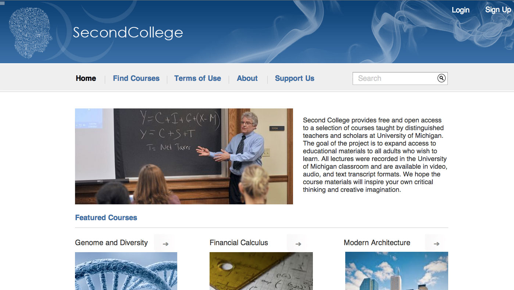

We designed a social learning platform that allows parents whose children are attending college to have access to college level courses. The reason why we targeted this population (including empty nesters) is because we find they are facing a transition in their life. They suddenly have extra time to spare and when their children are not around them, they may need someone to share the feelings. Therefore, we want to provide them a platform where they could enhance themselves as well as get connected with other parents facing the similiar situation.
We differs from coursera, one of the largest open course platforms, in the following aspects: coursera targets young adult learners while we are targeting middle-aged parents; we introduced gamification into the learning process in place of the regular assignments to allow parents to plan according to their own learning pace; we introduced social interactions among the parents.
